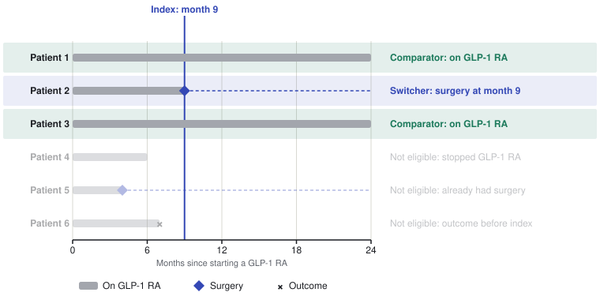
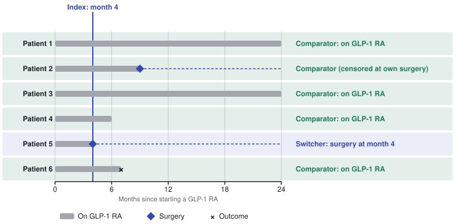

Warning: This package is experimental and under active development. The statistical methods have not yet been validated. Do not use it for research or clinical decision-making until validation is complete.
Prevalent New-User Cohort Design for OMOP CDM Data


Overview
PrevalentNewUser is an R package that implements the prevalent new-user (PNU) cohort design for observational studies using data mapped to the OMOP Common Data Model.
The PNU design, introduced by Suissa, Moodie & Dell’Aniello (2017), extends the classic active-comparator new-user (ACNU) design to situations where the comparator group has already been on the reference treatment when the index date is defined. This is common in pharmacoepidemiology: you want to compare patients who switch from drug A to drug B against patients who stay on drug A, conditioning on how long each group had been on A before the switch.
PrevalentNewUser sits alongside CohortMethod, which implements the ACNU design. The two packages are complementary: ACNU is appropriate when treatment-naive patients are available in sufficient numbers; PNU is appropriate when the population of interest consists primarily of patients who switch after a period of established therapy.
Full documentation is available at the pkgdown site, including a vignette walking through a complete single-study analysis.
The Prevalent New-User Design
| Concept | Meaning |
|---|---|
| Reference treatment (A) | The treatment patients are already on (e.g. GLP-1 RA) |
| New treatment (B) | The treatment some patients switch to (e.g. bariatric surgery) |
| Switcher (target) | A person who starts B; their B start date is the index date |
| Exposure set | Switchers who had the same duration on A at their index date, plus eligible comparators |
| Comparator | A person still on A, indexed on the day they had been on A as long as a matched switcher |
| TCPS | Time-conditional propensity score — P(switch) given covariates, estimated by conditional logistic regression stratified by exposure set |
| Matched set | One switcher + matched comparators within one exposure set; the stratum for the outcome model |
The key insight is that matching within exposure sets removes confounding by duration of prior treatment. Persons who have been on A for one month differ systematically from those who have been on A for two years, so the comparison must be made at the same point in the treatment history.
Who is a comparator depends on when the switch happens
Six patients start a GLP-1 RA at month 0. Some later have bariatric surgery. The index line marks when a switch happens; comparator eligibility is assessed on that same day of therapy.
Panel 1 — Patient 2 switches to surgery at month 9

Panel 2 — Patient 5 switches to surgery at month 4

Each switcher defines an exposure set: comparators are patients who, on the same day of GLP-1 RA therapy, are still taking it, haven’t had surgery, and haven’t had the outcome. The same patient can be a comparator in one set and a switcher in another (Patient 2), and someone ineligible at month 9 can be a comparator at month 4 (Patient 4).
Installation
PrevalentNewUser is not yet on CRAN. Install from GitHub:
# install.packages("remotes")
remotes::install_github("ob325/PrevalentNewUser")Quick Start
library(PrevalentNewUser)
# 1. Describe the cohorts and study options
cohortArgs <- createPnuCohortArgs(
targetCohortId = 1, # treatment A cohort
comparatorCohortId = 2, # treatment B / switcher cohort
outcomeCohortId = 3, # outcome cohort
washoutPeriod = 365 # days of prior observation required
)
# 2. Connect to your CDM
connectionDetails <- DatabaseConnector::createConnectionDetails(
dbms = "postgresql",
server = "myserver/mydb",
user = "user",
password = "password"
)
# 3. Pull data (including covariates and exposure sets)
covariateSettings <- FeatureExtraction::createDefaultCovariateSettings()
pnuData <- getDbPnuData(
connectionDetails = connectionDetails,
cdmDatabaseSchema = "cdm",
cohortDatabaseSchema = "results",
cohortTable = "cohort",
pnuCohortArgs = cohortArgs,
covariateSettings = covariateSettings
)
# 4. Build the study population (modifies pnuData in place)
spArgs <- createStudyPopulationArgs(
outcomeId = 3,
riskWindowStart = 0,
riskWindowEnd = 365,
endAnchor = "cohort start"
)
pnuData <- createStudyPopulation(pnuData, spArgs)
pop <- dplyr::collect(pnuData$studyPopulation)
# 5. Fit TCPS, match, and estimate
pop <- fitTcps(pop, pnuData, createTcpsArgs())
matched <- matchOnTcps(pop, createMatchingArgs(maxRatio = 4))
result <- fitOutcomeModel(matched, pnuData, createOutcomeModelArgs())
exp(result$logRr) # hazard ratio
result$ci95Lb
result$ci95UbRelationship to CohortMethod
| Feature | CohortMethod | PrevalentNewUser |
|---|---|---|
| Design | Active-comparator new-user (ACNU) | Prevalent new-user (PNU) |
| Prior treatment required? | No | Yes (treatment A) |
| Propensity score | Standard PS (unconditional logistic) | TCPS (conditional logistic, stratified by exposure set) |
| Exposure set 0 result | Native | Equivalent to CohortMethod (tested) |
| Runtime dependency on the other | — | No |
References
Suissa S, Moodie EE, Dell’Aniello S. Prevalent new-user cohort designs for comparative drug effect studies by time-conditional propensity scores. Pharmacoepidemiology and Drug Safety 2017;26(4):459–468. doi:10.1002/pds.4117
License
Copyright 2026 Observational Health Data Sciences and Informatics
Licensed under the Apache License, Version 2.0. See LICENSE for details.